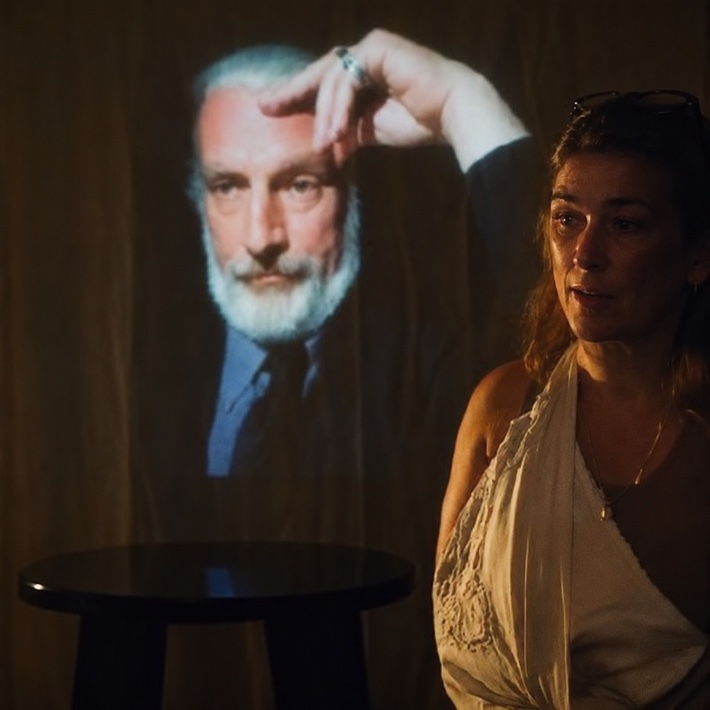

Une présence, plusieurs personnages.
De Rachel Lamarre dans Piratage(s) à La Muse dans Seuls, le parcours d’interprète de Cathie Belley circule entre les plateaux, la scène et l’improvisation.
Piratage(s) · La maison du pêcheur · L’origine d’un cri
Explorer les rôles et la filmographie